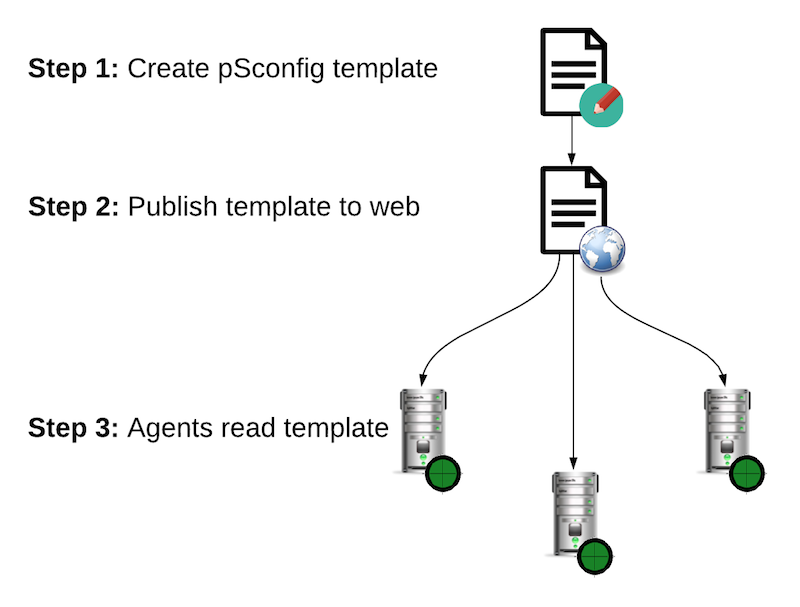

What is pSConfig?¶
Introduction¶
pSConfig is a template framework for describing and configuring a topology of tasks. If you manage more than one perfSONAR host (or participate in a distributed community of perfSONAR measurement hosts), the following configuration tasks can quickly become unwieldy:
Scheduling the tasks you want to run at each location.
Maintaining visualization components to display results of the measurements from multiple hosts
pSConfig assists with these challenges by providing tools to automate each of the configuration tasks listed above.
Concepts and Terminology¶
It is helpful to understand a few basic terms when discussing pSConfig. Starting at the most fundamental level, a task in the context of pSConfig is a job to do consisting of a test to be carried out, scheduling information and other options. In fact, a task in pSConfig means the same thing as a task in pScheduler.
Beyond individual tasks, pSConfig is also concerned with how the tasks are interrelated and arranged, known as the task topology. Many tasks have common parameters or are related in some way, so it’s important to be able to look at the tasks as more than just a set of independent jobs. pSConfig cares about these relationships so it can be used as input to visualization components such as MaDDash to relate the results in meaningful ways.
A pSConfig template is a description of the task topology in a machine readable format. pSConfig templates are expressed in JSON files. The templates are designed to be highly expressive and extensible so that new capabilities can easily be supported. pSConfig templates by themselves are just files, and they only become useful when something reads them and is able to perform action based on their content.
An agent is software that reads one or more pSConfig templates and uses the information to perform a specific function. There are currently two agents in perfSONAR:
pscheduler-agent - An agent that parses one or more template(s) for measurements to be run and submits them to pScheduler
maddash-agent - An agent that reads one or more template(s) and creates a MaDDash dashboard to display the results
With the fundamentals out of the way, we can now bring them together to demonstrate the basic workflow of how pSConfig can be used to configure a perfSONAR deployment.
The pSConfig Workflow¶
The basic workflow of pSConfig is outlined in the diagram below:
If you think you’re ready to jump right into this workflow you can see pSConfig Quickstart Guide. Otherwise, you can find more detailed information on the steps outlined by the diagram in the following sections:
Step 1 consists of building a JSON template. A primer on this topic can be found in Introduction to pSConfig Templates
Step 2 is the process of taking the generated template and publishing it to the web. This process is detailed in Publishing a pSConfig Template
Step 3 involves configuring agents to read your published templates. perfSONAR currently provides two agents: information on the pScheduler agent used to create tasks can be found in Running the pSConfig pScheduler Agent and information on using the MaDDash agent to configure dashboards can be found in Running the pSConfig MaDDash Agent.